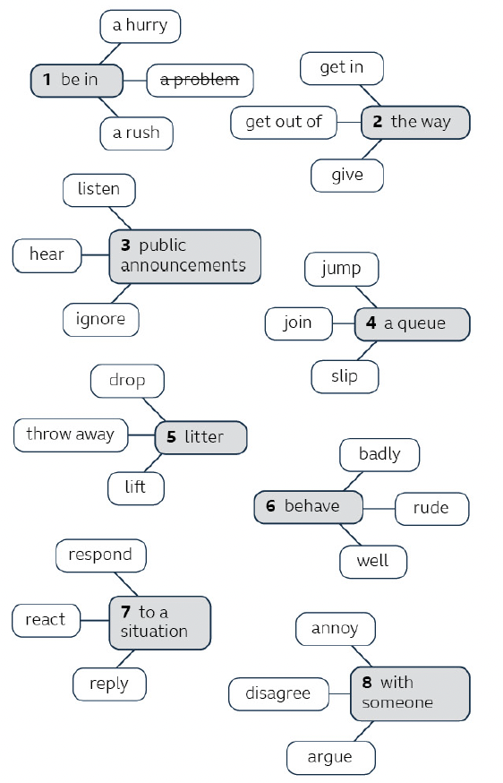

Slow walkers in a busy street when you're in a hurry.
😐😑😠😤🤯
People who don't say thank you when you hold the door.
😐😑😠😤🤯
Which one got a 5 from you? Tell me about a specific time it happened.
Which one do you think other people rate higher than you? Why?
Add one pet peeve of your own that isn't on the list.
1
Vocabulary — Pet Hates
vocabulary▼
1A. Read the article. Discuss the questions.
What's your pet hate about behaviour in public?
Everybody has one or more things that really annoy them in public. Here are some classics:
Here are some classics:
❙when I'm in a hurry and the people in front of me walk slowly and get in the way
❙when public announcements in stations are impossible to hear
❙when I'm in a shop and the customer ahead of me is on their phone and ignores the sales assistant
❙when I'm waiting for a bus and people jump the queue
❙when people throw litter out of car windows
❙when children behave really badly in a public place and the parents don't react or do anything
❙when I'm next to someone and they argue loudly with someone on their phone
So, those are our pet hates. What are yours?
1 How do you feel about each of the pet hates in the article? Do any of them bother you more than others?
2 What are your own pet hates? Think of at least two that aren't on the list.
1B. Look at the word webs and find the collocation that does NOT belong. Use the article in Ex 1A to help.

1 a problem (you're in a hurry / a rush — but you have a problem)
2 give (you get in / out of the way — but "give the way" isn't a collocation)
3 listen (you hear, ignore public announcements — but "listen public announcements" needs a preposition: listen to)
4 slip (you join / jump a queue — you don't slip a queue)
5 lift (you drop / throw away litter — you don't lift litter)
6 rude (you behave badly / well — rude is an adjective, not an adverb)
7 reply (you react / respond to a situation — you reply to a message, not to a situation)
8 annoy (you disagree / argue with someone — you annoy someone, not "annoy with someone")
1C. Think of something that annoys you on the street. Tell me about it. Use the collocations in Ex 1B.
A: I hate it when I can see someone who needs help and no one else reacts to the situation.
B: Yes, I hate that, too. They just ignore the person and pretend they don't see or they're too busy.
2
How to … Talk About Things That Annoy You
how to▼
2A. What things annoy you about people's behaviour on public transport? Make a list.
Think of as many things as you can — no need to use formal language yet, just brainstorm.
2B. Listen to the conversation. What things do they talk about that are on your list?
3A. Complete the sentences with two or three words.
1 B: Were there a lot of people on the train?
A: No, not many, but it's just the way some people behave. I it.
2 A: First I had to queue to buy a ticket because the ticket machines were broken.
B: I hate happens.
3 B: People doing that on trains! I expect it smelled bad.
A: Yeah, the smell was terrible! It really nerves.
4 B: I know what you mean, without asking anyone?
A: Yeah, it me when they do that.
5 B: You're so upset about things. And you're here now.
A: But that sort of behaviour me.
1 can't stand
2 it when that
3 are always - got on my
4 really annoys
5 always getting - really bugs
3
Grammar Bank 2C
grammar▼
We use these phrases to talk about things that annoy us:
I can't stand it.I can't bear it.It really annoys me.It gets on my nerves.It bugs me.It drives me crazy / nuts / mad.Don't get me started on (people who never say thank you).
Notice: It bugs me and It drives me nuts are informal.
Continue with when + clause:
I can't bear it when that happens.
It gets on my nerves when people drop litter.
It drives me nuts when people don't answer my messages.
Also use a relative clause or -ing:
Children that misbehave in restaurants really bug me.
I can't stand people shortening my name.
Short phrases to agree / disagree:
Yes, so annoying. · I don't mind that. · That doesn't bother me.
Verbs in the continuous form
Use present/past continuous with always, constantly, continually, forever to describe an annoying habit:
You're always losing your phone!
My dad's forever complaining about noise.
Our car was continually breaking down.
Also used for positive emotions:
Children at this age are so cute. They're constantly laughing!
Practice 1 — Complete the conversations. Three extra words in each box.
A: I can't bear it 1 Karly's looking at her phone and keeps asking me what's happening.
B: Yes, Milo does that too. It 2 me nuts.
A: And she's 3 taking control of the remote and changing channels without asking.
B: You know what 4 me about TV? When you can hardly hear the TV show but then the adverts are really loud.
A: So 5! And you have to keep changing the volume on the remote.
Conversation 2: Work
makeonputtingreadingstandstartedtalkingunder
A: The job's OK, but there are some things about my workplace that I really can't 6.
B: For example?
A: Well, I'm in an open-plan office and it really gets 7 my nerves when people use their phone right next to me.
B: Yes, or people 8 their phone on speaker so you can hear the whole conversation.
A: And don't get me 9 on people 10 my phone or computer over my shoulder.
Conversation 3: Cars
alwaysdriveisitsowhotheytravelling
A: That car just turned left without giving a signal. I can't stand 11 when people do that.
B: Yes, 12 annoying and dangerous! And then there are the people 13 never turn off their indicators.
A: Maybe they just forget. But you know what I can't stand? People 14 at half the speed limit in the fast lane.
B: I agree. I have a friend who 15 forever doing that.
1 when · 2 drives · 3 constantly · 4 bugs · 5 annoying
6 stand · 7 on · 8 putting · 9 started · 10 reading
11 it · 12 so · 13 who · 14 travelling · 15 is
Practice 2 — Correct two mistakes in each conversation
A: It gets on my nerves when people play loud music out of their apartment windows. B: Yes, and in my block the guy next door is continually sing along with his favourite songs.
A: This light above my desk is drives me mad. It's constantly buzzing. B: It bother me. I guess I've stopped noticing.
A: Oh no! I've lost one of my earrings. I'm usually doing that. B: Yes, so annoyed! I always buy two pairs of earrings so that I have a spare pair.
A: I really hate this zip in my bag. It's for getting stuck. B: Yes I have a bag like that. And don't make me started on zips which come undone.
1 B: singing (continually + -ing)
2 A: drives me mad (not "is drives"); B: it bothers me
3 A: always / constantly / forever doing that; B: so annoying
4 A: it's forever getting stuck; B: don't get me started
4
Pronunciation — Stress and Intonation to Show Annoyance
pronunciation▼
4A. Read the sentences (1–6). What place are the people talking about?
I can't stand it when people take a long time to pay.
It annoys me when they try to sell me something I don't want.
It drives me crazy when people eat food while shopping.
I hate it when I can't reach something on the top shelf.
I can't bear it when food is packaged in too much plastic.
People are always jumping the queue.
A shop — most likely a supermarket.
4B. Listen to the sentences in Ex 4A. Underline the word with the most stress in each sentence. Is the speaker's voice higher or lower on the key stressed word?
Most stressed words: 1 stand · 2 annoys · 3 drives + crazy · 4 hate · 5 bear · 6 always
The speaker's voice is higher on the stressed word.
4C. Repeat the sentences from Ex 4A. Pay attention to stress. What do you think about those situations?.
5
Speaking — Annoying Situations
speaking▼
5A. Think of three or more things that annoy you in each situation. Say why they annoy you. Use the phrases from Ex 3A.
on social mediain a cinemawith neighbourswith a flatmate or roommateon an online video callon a planein a restaurant
Useful phrases — Ex 3A
I can't stand it when…strong annoyance
It really annoys me when…clear and direct
It really gets on my nerves when…informal, strong
It really bugs me when…very informal
I hate it when that happens.reaction phrase
People are always doing that!generalising
5B. Which of your situations came up as most annoying?
6
Mediation Skills — Summarising
mediation▼
Mediation Bank · Writing · page 146
2C — Well-being Week
WRITING OUTPUT | a written summary · GOAL | summarise an article · MEDIATION SKILL | summarising skills
Warm-up
1 What are some of the main reasons that people argue with their colleagues or classmates?
2 What's the best way of stopping an argument becoming a big problem?
Prepare
2. Read the Scenario. What do you think 'Well-being Week' is?
SCENARIO
You receive this message:
As you all know, it's Well-being Week soon, and I'd like us all to do some research about how to look after our mental health in the team. I'll send you all some links to look at later today. Let's use them to make our 'Top four ways of dealing with anger in a team' blog.
3. Read both texts. Which of the topics in the box are mentioned in each one?
knowing your own behaviourpretending things are OKtaking a different point of viewwriting something down
Text A
How to deal with anger at work
Because I work in a stressful job, I understand what it's like to feel angry at work. Here's some advice for dealing with it.
❶ It's totally normal!
A lot of people want to calm down straight away when they're angry and just forget about what made them angry, but often this is not possible. Sometimes, you just have to accept it, and also remember that anger is a normal emotion – you're not a bad person just because you feel mad at someone or something. Pretending that you're calm when you're not can actually be pretty dangerous – you still have a lot of stress inside you, and it's very easy for you to get angry again, especially if the situation happens a lot. In my first job I often had coffee with colleagues who I was really angry with, pretending everything was OK, but in the end the bad feeling always came out and there were some really ugly situations that I could have avoided.
❷ It's not the end of the world
Sometimes when we're really mad, it can feel like the end of the world, and our relationships with people on our team are permanently broken. When you feel like this, try to remember previous problems with people at work. Did you fix the situation? The answer is almost always 'yes', and if this was true before, it's also true now – it will be possible to find a way to make things better. I remember two of my colleagues who used to fight a lot, and they've been happily married for ten years now!
❸ Space is good
Sometimes the best thing you can do when you're really angry with someone is walk away. Take a walk outside, take some deep breaths and let some of the stress go. It's better than staying in a bad situation because things can just get worse and worse. In my last job I always wanted to have the last word when I was mad at my colleague (and she did with me, too!), and it always made things worse when we kept arguing. If we spent a little time apart, we were usually just fine.
❹ There are warning signs
You know yourself. You know when that feeling of anger is getting stronger and stronger. It's like traffic lights: when your feelings reach yellow, don't wait for them to get to red, do something before it gets really bad. In my last job, I knew my colleagues really well, and I could see the warning signs. That was the time to go for lunch and talk about things in a friendly way or take some time away from each other, before it got really bad.
Text A mentions: pretending things are OK (tip 1) · taking a different point of view (tip 2 — remember it can be fixed) · knowing your own behaviour (tip 4 — warning signs)
Text B
Tips for beating anger at work
OK, guys, today's blog is my top four tips for dealing with stress with other people on your team.
❶ See it both ways
So, you're getting angry with a colleague for some reason. Imagine a stranger coming in and looking at the situation. What would they think? Would they see a different way of looking at the issue than you? It's a real skill to look at a situation through another person's eyes, and a really good way to help you calm down. Sometimes, we feel that other people are trying to make us angry, but when you think more carefully about the reasons for their actions, you can start to understand why they are doing the things they are doing. Sometimes when I look at my own behaviour from a strangers' point of view, I feel quite embarrassed and I can't stay angry.
❷ Take out a pen and paper
If you're the same as me, I find it very hard to explain how I feel when I'm angry. I focus on the emotion and I find it really difficult to explain the details that will help people understand why I'm angry, well, because I'm just too angry! When I write down what the problem is, I start to understand myself better, and I can stop, think and edit what I've written so that I can explain things better. I can also edit the angry language that I write at the beginning and replace it with calmer words. For example, I remember writing: 'Carl is such an idiot. He never listens to anyone because he always thinks he's right.' Later on, I thought about the situation and wrote: 'Carl is very confident about his opinions, but maybe he needs to listen more.'
❸ Focus on the answer
Yes, you want to talk about how you're feeling, and that's important. However, you need to do more than that. You need to be part of solving the problem and you need to be open to suggestions from other people. If you only concentrate on why you're angry and you're not interested in talking about solving problems, then it's difficult for the situation to improve.
❹ Take care
There are some things you can do to make your general mood better, which makes an argument with a teammate less likely. Some of the key things are: getting enough sleep, doing regular exercise and controlling things like caffeine and alcohol. It's difficult to be in control of all of these things all the time, but you need to do your best for your sake and for your colleagues', too. A few years ago, I promised myself that I would get a minimum of eight hours sleep per night, and it changed my mood a lot. Give it a try!
4. Read the Mediation Skill box. What kind of information can we sometimes remove when we write a summary?
Mediation Skill
summarising skills
When you write a summary of a text, there are a few useful steps:
First, decide what information you need. Read the text and for each paragraph decide what the most important point is.
Then think about what information you don't need, such as long introductions to the topic and examples.
Use bullet points to help keep your summary short.
When you finish writing, check your summary against the article.
Helpful phrases:
The article / blog / writer says (that) …One of the main points is …The writer recommends + -inge.g. The article says that it's very easy to get angry with other people if you don't sleep well.
We can remove: long introductions to the topic and examples (personal stories, specific details).
5. Look at your article (Text A or Text B) again. Find the key information that you would include in a summary.
Go through each tip. For each one — what is the ONE most important sentence? Underline it or write it down.
Mediate
6A. Read the Scenario again. Write a short summary of your article, using the ideas from the Mediation Skill box to help you.
Your summary:
6B. Read your summary again. Does it answer these questions about the article?
— What is the article about? (topic)
— What are the main tips? (key points)
— Are there any examples or personal stories you removed?
6C. Choose the top five tips you would include in an article about avoiding anger in a team. Use tips from both Text A and Text B.